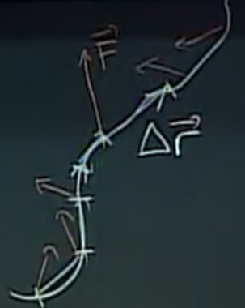

Line Integrals
Table of Contents
1. Work and Line Integrals
Recall that work is defined as the dot product between force and displacement, the amount of energy provided by the force to perform the displacement:
\[ W = \vec{F} \cdot \Delta \vec{r} \]
However, we may be dealing with more complicated trajectories, or when the force is not constant over the entire displacement, like so:

In these cases, we can try taking smaller and smaller segments of the trajectory and then summing all of our work calculations for each of those segments. Therefore, along some trajectory \(C\), the work adds up to the line integral:
\[ W = \lim_{\Delta r_i \to 0} \sum_i \vec{F} \cdot \Delta \vec{r_i} = \int_C \vec{F} \cdot \text{ d}\vec{r} \]
In order to actually compute this integral, we can instead integrate over time:
\begin{align} W = \int_C \vec{F} \cdot \text{ d}\vec{r} = \int_{t_1}^{t_2} \vec{F} \cdot \frac{\text{d}\vec{r}}{\text{d}t} \text{ d}t \end{align}We can also try writing the force and displacement as \(\vec{F} = \langle M, N\rangle\) and \(\text{d}\vec{r} = \langle\text{d}x, \text{ d}y\rangle\). Therefore, we have:
\begin{align} W = \int_C \vec{F} \cdot \text{ d}\vec{r} = \int_C M \text{ d}x + N \text{ d}y \end{align}Critically, note that we cannot split this into two integrals as the notation suggests, as in fact \(M\) and \(N\) depends on both \(x\) and \(y\). In order to actually evaluate this, we need to express \(M\) and \(N\) in terms of a single variable (e.g. \(t\)), and then substitute into the integral.